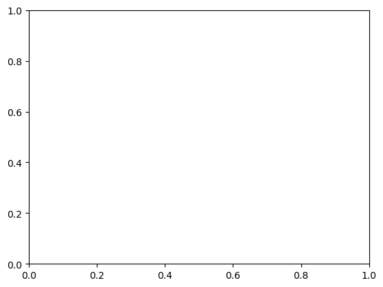
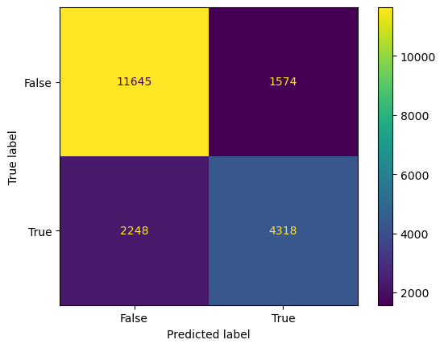

import numpy as np
import pandas as pd
import seaborn as sns
from matplotlib import pyplot as plt
from sklearn.datasets import make_blobsOverview
Goal
Correctly classify penguins by species (Gentoo, Chinstrap, Adelie).
Approach
- Choose Problem
- Import appropriate dataset for training
- Chosse Features
- Basic Descriptives + visuals (if I’m not lazy)
- Model Training & Tuning
- Model Auditing
- Concluding Discussion
Choose Problem
Import appropriate dataset for training
#talk a little about folktales
from folktables import ACSDataSource, ACSEmployment, BasicProblem, adult_filter
import numpy as np
STATE = "FL"
data_source = ACSDataSource(survey_year='2018',
horizon='1-Year',
survey='person')
acs_data = data_source.get_data(states=[STATE], download=True)
acs_data.head()| RT | SERIALNO | DIVISION | SPORDER | PUMA | REGION | ST | ADJINC | PWGTP | AGEP | ... | PWGTP71 | PWGTP72 | PWGTP73 | PWGTP74 | PWGTP75 | PWGTP76 | PWGTP77 | PWGTP78 | PWGTP79 | PWGTP80 | |
|---|---|---|---|---|---|---|---|---|---|---|---|---|---|---|---|---|---|---|---|---|---|
| 0 | P | 2018GQ0000011 | 5 | 1 | 12702 | 3 | 12 | 1013097 | 9 | 64 | ... | 8 | 2 | 15 | 9 | 7 | 8 | 0 | 14 | 8 | 15 |
| 1 | P | 2018GQ0000056 | 5 | 1 | 9907 | 3 | 12 | 1013097 | 53 | 95 | ... | 53 | 52 | 53 | 4 | 98 | 3 | 52 | 102 | 100 | 102 |
| 2 | P | 2018GQ0000085 | 5 | 1 | 7102 | 3 | 12 | 1013097 | 26 | 15 | ... | 22 | 4 | 28 | 45 | 50 | 51 | 23 | 23 | 27 | 3 |
| 3 | P | 2018GQ0000092 | 5 | 1 | 3302 | 3 | 12 | 1013097 | 80 | 20 | ... | 79 | 136 | 145 | 12 | 84 | 12 | 80 | 79 | 14 | 74 |
| 4 | P | 2018GQ0000104 | 5 | 1 | 10501 | 3 | 12 | 1013097 | 31 | 18 | ... | 5 | 4 | 5 | 31 | 29 | 5 | 5 | 31 | 4 | 3 |
5 rows × 286 columns
Choose Features
possible_features=['AGEP', 'COW', 'SCHL', 'MAR', 'OCCP', 'POBP', 'RELP', 'WKHP', 'RAC1P', 'SEX', 'PINCP'] #10 FEATURES FOR ACSIncome as listed in paper + PINCP as Target
acs_data[possible_features].head()| AGEP | COW | SCHL | MAR | OCCP | POBP | RELP | WKHP | RAC1P | SEX | PINCP | |
|---|---|---|---|---|---|---|---|---|---|---|---|
| 0 | 64 | NaN | 16.0 | 1 | NaN | 327 | 16 | NaN | 8 | 1 | 0.0 |
| 1 | 95 | NaN | 16.0 | 2 | NaN | 12 | 16 | NaN | 1 | 2 | 14500.0 |
| 2 | 15 | NaN | 12.0 | 5 | NaN | 12 | 16 | NaN | 2 | 1 | 0.0 |
| 3 | 20 | 1.0 | 16.0 | 5 | 5240.0 | 11 | 17 | 40.0 | 9 | 1 | 4900.0 |
| 4 | 18 | NaN | 16.0 | 5 | NaN | 40 | 17 | NaN | 2 | 1 | 0.0 |
features_to_use = [f for f in possible_features if f not in ["PINCP", "SEX"]]IncomeProblem = BasicProblem(
features=features_to_use,
target='PINCP',
target_transform=lambda x: x > 50000,
group='SEX',
preprocess=adult_filter,
postprocess=lambda x: np.nan_to_num(x, -1),
)
features, label, group = IncomeProblem.df_to_numpy(acs_data)from sklearn.model_selection import train_test_split
X_train, X_test, y_train, y_test, group_train, group_test = train_test_split(
features, label, group, test_size=0.2, random_state=0)import pandas as pd
df = pd.DataFrame(X_train, columns = features_to_use)
df["group"] = group_train
df["label"] = y_trainBasic Descriptives
df| AGEP | COW | SCHL | MAR | OCCP | POBP | RELP | WKHP | RAC1P | group | label | |
|---|---|---|---|---|---|---|---|---|---|---|---|
| 0 | 64.0 | 1.0 | 21.0 | 1.0 | 9030.0 | 39.0 | 0.0 | 96.0 | 1.0 | 1 | True |
| 1 | 68.0 | 3.0 | 16.0 | 3.0 | 5400.0 | 12.0 | 0.0 | 40.0 | 2.0 | 2 | False |
| 2 | 28.0 | 4.0 | 20.0 | 5.0 | 5310.0 | 13.0 | 0.0 | 20.0 | 1.0 | 1 | False |
| 3 | 50.0 | 1.0 | 16.0 | 1.0 | 3603.0 | 12.0 | 0.0 | 40.0 | 2.0 | 2 | False |
| 4 | 26.0 | 2.0 | 20.0 | 5.0 | 5400.0 | 48.0 | 0.0 | 40.0 | 1.0 | 2 | False |
| ... | ... | ... | ... | ... | ... | ... | ... | ... | ... | ... | ... |
| 79135 | 43.0 | 1.0 | 21.0 | 1.0 | 1021.0 | 22.0 | 1.0 | 40.0 | 1.0 | 1 | False |
| 79136 | 37.0 | 1.0 | 19.0 | 1.0 | 9645.0 | 49.0 | 1.0 | 40.0 | 1.0 | 1 | False |
| 79137 | 41.0 | 5.0 | 21.0 | 1.0 | 440.0 | 364.0 | 0.0 | 45.0 | 1.0 | 1 | True |
| 79138 | 55.0 | 1.0 | 16.0 | 1.0 | 9130.0 | 332.0 | 0.0 | 40.0 | 2.0 | 1 | False |
| 79139 | 34.0 | 1.0 | 16.0 | 5.0 | 20.0 | 36.0 | 0.0 | 40.0 | 1.0 | 1 | False |
79140 rows × 11 columns
df.shape[0] # gives number of rows; .shape gives (rows, columns)79140There are 79140 people in this dataset
df.label.value_counts(normalize = True)False 0.668815
True 0.331185
Name: label, dtype: float64Approximately 33% of these people have a target label corresponding to 1, meaning their income is greater than $50,000.
df.group.value_counts()1 40684
2 38456
Name: group, dtype: int64There are 40,684 individuals in group 1 (male respondents) and 38,456 individuals in group 2 (female respondents)
over50k = df.query("label == True")over50k.group.value_counts()1 16231
2 9979
Name: group, dtype: int64There are 16,231 individuals who make more than \$50,000 in group 1 and 9,979 individuals who make more than \$50,000 in group 2
Approximately 39.9% of the male respondents (group 1) have an income over \$50,000 (target label equals 1) and appproximately 25.9% of the female respondents (group 2) have an income over \$50,000 (target label equals 1)
- https://jakevdp.github.io/PythonDataScienceHandbook/03.00-introduction-to-pandas.html-
- https://levelup.gitconnected.com/20-pandas-functions-for-80-of-your-data-science-tasks-b610c8bfe63c
- https://stackoverflow.com/questions/40171498/is-there-a-query-method-or-similar-for-pandas-series-pandas-series-query
- https://pandas.pydata.org/docs/reference/frame.html
- https://scikit-learn.org/stable/modules/generated/sklearn.metrics.ConfusionMatrixDisplay.html
- https://stackoverflow.com/questions/40758562/can-anyone-explain-me-standardscaler
Model Training
from sklearn.linear_model import LogisticRegression
from sklearn.pipeline import make_pipeline
from sklearn.preprocessing import StandardScaler
from sklearn.metrics import confusion_matrix
from sklearn.ensemble import RandomForestClassifier
model = make_pipeline(StandardScaler(), RandomForestClassifier(max_depth=20, random_state=0))
model.fit(X_train, y_train)Pipeline(steps=[('standardscaler', StandardScaler()),
('randomforestclassifier',
RandomForestClassifier(max_depth=20, random_state=0))])Tuning hyperparameters with cross-validation
#do this loop with cross_validation
from sklearn.model_selection import cross_val_score
train_score_hist = []
crossval_score_hist = []
for i in range(1,12):
model = make_pipeline(StandardScaler(), RandomForestClassifier(max_depth=i, random_state=0))
model.fit(X_train, y_train)
#cross-validation
model_scores = cross_val_score(model, X_train, y_train, cv=5)
crossval_score_hist.append(model_scores.mean())
num_steps = len(crossval_score_hist)
plt.plot(np.arange(num_steps) + 1, val_score_hist, label = "val")
num_steps = len(train_score_hist)
plt.plot(np.arange(num_steps) + 1, train_score_hist, label = "train")ValueError: x and y must have same first dimension, but have shapes (11,) and (24,)
Model Auditing
Overall Measures
Preliminaries
#https://middlebury-csci-0451.github.io/CSCI-0451/lecture-notes/classification-in-practice.html for write-up explain
y_hat_tests = model.predict(X_test) #gather predictions; but on test data thooo hmm suspect
from sklearn.metrics import confusion_matrix
def PPV(cf):
TP = cf[0,0]
FP = cf[0,1]
FN = cf[1,0]
TN = cf[1,1]
return TP/(TP+FP)
def FPR(cf):
TP = cf[0,0]
FP = cf[0,1]
FN = cf[1,0]
TN = cf[1,1]
return FP/(FP+TN)
def FNR(cf):
TP = cf[0,0]
FP = cf[0,1]
FN = cf[1,0]
TN = cf[1,1]
return FP/(TP+FN)from sklearn.metrics import confusion_matrix, ConfusionMatrixDisplay
cm = confusion_matrix(y_test, y_hat_tests, labels=model.classes_)
disp = ConfusionMatrixDisplay(confusion_matrix=cm,
display_labels=model.classes_)
disp.plot()
plt.show()
#Why do we do confusion matrix on test data? cuz this gives us meaningful results dummyOverall Measures
The model’s overall accuracy in predicting whether someone’s income is over $50,000 is:
overall_accuracy = (y_hat == y_test).mean()0.8068233510235027The model’s positive predictive value (PPV) is:
overall_PPV = PPV(confusion_matrix(y_test, y_hat))
overall_PPV0.880928965882442The model’s overall false negative rate FNR is:
overall_FNR = FNR(confusion_matrix(y_test, y_hat))
overall_FNR0.11329446483840783The model’s overall false negative rate FPR is:
overall_FPR = FPR(confusion_matrix(y_test, y_hat))
overall_FPR0.2671418873048201By-Group Measures
The accuracy for male individuals is:
(y_hat == y_test)[group_test == 1].mean()0.7906884987176958PPV(confusion_matrix(y_test[group_test == 1], y_hat[group_test == 1]))0.8671823568136933FNR(confusion_matrix(y_test[group_test == 1], y_hat[group_test == 1]))0.12256986634264884FPR(confusion_matrix(y_test[group_test == 1], y_hat[group_test == 1]))0.22706809229037703The accuracy for female individuals is:
(y_hat == y_test)[group_test == 2].mean()0.8237794132891054PPV(confusion_matrix(y_test[group_test == 2], y_hat[group_test == 2]))0.8926221475570488FNR(confusion_matrix(y_test[group_test == 2], y_hat[group_test == 2]))
FPR(confusion_matrix(y_test[group_test == 2], y_hat[group_test == 2]))0.32805816937553467Bias Measures
Calibration
(y_hat == y_test)[group_test == 1].mean()0.7906884987176958(y_hat == y_test)[group_test == 2].mean()0.8237794132891054Error Rate Balance
#fnr & fpr == for both; not the caseStatistical Parity
Very subjective picking what the worse classification is. In hands of gov. for taxes, maybe it’s worse to be predicted high, cuz you’ll pay more taxes and good for lower cuz you’ll get more benefits. Bad for people trying to charge you (loans maybe idk), cuz they’ll predict you have more money and charge you more.
#do it for both(y_hat == 0)[group_test == 1].mean()0.64943775892681(y_hat == 0)[group_test == 2].mean()0.7576448636881932(y_hat == 1)[group_test == 1].mean()0.35056224107318995(y_hat == 1)[group_test == 2].mean()0.24235513631180677Intersectional Bias
black_white = df.query("RAC1P == 1.0 or RAC1P == 2.0")
black_white.groupby(['group', 'RAC1P']).label.value_counts(normalize = True).to_frame()| label | |||
|---|---|---|---|
| group | RAC1P | label | |
| 1 | 1.0 | False | 0.569772 |
| True | 0.430228 | ||
| 2.0 | False | 0.778583 | |
| True | 0.221417 | ||
| 2 | 1.0 | False | 0.718712 |
| True | 0.281288 | ||
| 2.0 | False | 0.844282 | |
| True | 0.155718 |